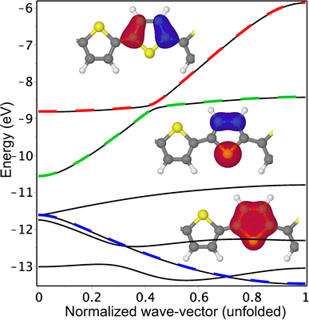
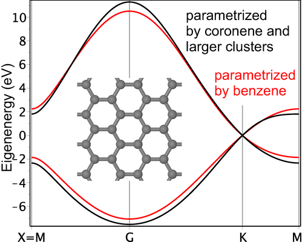
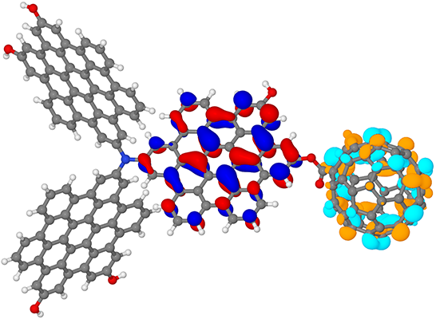

Electronic coarse-graining
The goal of electronic coarse-graining of a semiconductor is to construct a minimal local basis
providing an accurate description of the frontier orbitals and near-gap excitations under small atomic displacements.
It serves as a basis for first-principles electron-phonon models.
In particular, it gives electronic intermolecular couplings, which themselves provide electronic connectivity map of the semiconductor.


Requirements:
- Stability/robustness of the coarse-grained basis wrt molecular fluctuations at ambient conditions
- Robustness and scalability of the coarse-graining algorithm
- Quality control of the coarse-grained basis and matrix elements
- Accurate extrapolation to infinite system (if needed)
Applications
- Determination of the electronic structure of an infinite system from calculations of its fragments
(if conventional methods are unsuitable)
[2D pnictogens,
polymers]
- Basis optimization and calculation of matrix elements of electron-phonon Hamiltonian
[charge transport in molecular solids,
review on modeling]
- Basis optimization for non-adiabatic molecular dynamics
- In-depth analysis of electronic structure including a map of electronic connectivity
[polymers]
- Generation of high-level descriptors for machine learning
- Hybrid approaches like QM/TB

References
Publications